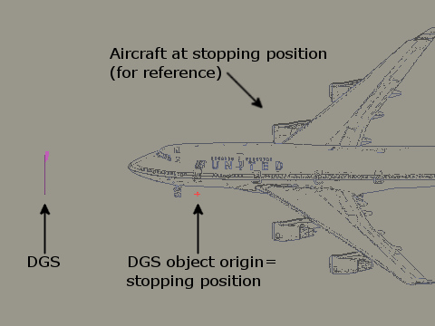
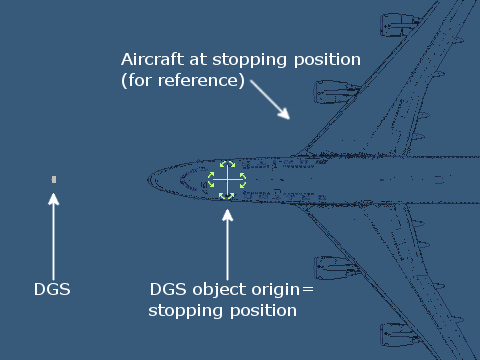

| Marginal → X-Plane Scenery → Tools → AutoGate |
This kit allows X-Plane scenery designers to add animated jetway and docking guidance systems (DGS) to scenery packages. Two types of jetway and two types of DGS are included.
The jetway animates to “dock” with the plane's main door when the pilot engages the parking brake and shuts down the plane's engines with the plane within ½m of the correct stopping position. The DGS guides the pilot to the correct stopping position.
An example scenery package built using this kit is available. Please see the notes below if you're upgrading from a previous version of this kit.
The jetways and DGSs are standard X-Plane scenery objects that you place in your scenery package using OverlayEditor (version 2.27 or later recommended) or WED (version 1.1r1 or later recommended). They are animated by X-Plane custom datarefs which are supplied by a plugin.
The plugin needs to know the location of the main boarding door on the plane that the user is piloting and, if the plane is an Airbus or Boeing, the type of the plane. The plugin reads this information from the “boarding door location” and “ICAO code” values in the ACF file of the aircraft that the user is piloting. These values can be edited on the Standard → Viewpoint screen in Plane-Maker. If the plugin is not installed or if the plugin cannot determine the location of the main boarding door then the DGS will stay blank and the jetway will remain in the retracted position.
The system is designed so that it imposes no more load on X-Plane than normal “static” scenery objects unless the user's viewpoint is within 1000m of a jetway or 500m of a DGS, in which case the load remains very modest.
Download and install the AutoGate plugin. Installation instructions are in the file ReadMe.txt included.
Please do not re-distribute the plugin with your scenery package; ask your users to download it from http://marginal.org.uk/x-planescenery/AutoGate.zip instead. This ensures that they have the latest version. (Future versions of the plugin may support more jetways and/or DGSs, but will will remain backwards-compatible).
Two types of DGS are supplied for use without an accompanying animated jetway, e.g. for use at apron parking stands:
| Safedock®2S advanced DGS | Safegate® inductive-loop DGS | |
|---|---|---|
|
|
Various versions of these stand-alone DGS objects are supplied in this kit's Standalone_DGSs folder, named SA-dm-Safedock2S-hm.obj and SA-dm-Safegate-hm.obj. These differ in the distance d between the stopping point and the DGS, and in the height h of the DGS above the ground. Parking stands intended for heavies will need the further and taller DGSs. You don't need to distribute all of these objects with your scenery package - only the ones that you use.
To place a stand-alone DGS into your scenery package:
Standalone_DGSs folder into your scenery package;
Standalone_DGSs folder.Safedock2S.dds + Safedock2S_LIT.dds and/or Safegate.dds + Safegate_LIT.dds) from the Standalone_DGSs folder into your scenery package folder.| OverlayEditor: Select the DGS object and press C. The red cursor jumps to the DGS object's origin: |
WED: Select the DGS object using the Vertex tool. The yellow cursor shows the DGS object's origin: |
|  |  |
Two types of animated jetway are supplied:
| Glass jetway | Steel jetway | |
|---|---|---|
 |
 |
Various versions of these jetway objects are supplied in this kit's Jetways folder, named AutoGate-lm-glass.obj and AutoGate-lm-steel.obj. These differ in the (approximate) length l of the jetway in its retracted position. You don't need to distribute all of these objects with your scenery package - only the ones that you use.
To place an animated jetway into your scenery package:
AutoGate-*.obj jetway objects from the Jetways folder into your scenery package;
Jetways folder.AutoGate2.dds + AutoGate2_LIT.dds from the Jetways folder into your scenery package folder.| OverlayEditor: Select the jetway object and press C. The red cursor jumps to the jetway object's origin: |
WED: Select the jetway object using the Vertex tool. The yellow cursor shows the jetway object's origin: |
 |
 |
StaticGate-*.obj jetway objects from the Jetways folder. (This limitation exists in part because the X-Plane ACF file only specifies one boarding door location). The example scenery package contains a gate of this configuration.
Two types of DGS are supplied for use with in conjunction with an animated jetway - refer to the Stand-alone section for pictures. Use of a DGS is optional - the animated jetways work fine without it - but the pilot will find it difficult to stop the aircraft at the correct position if you don't include a DGS.
Various versions of the DGS objects are supplied in this kit's DGSs folder, named Safedock2S-hm[-pole].obj and Safegate-hm[-pole].obj. These differ in the height h of the DGS above the ground, and whether the DGS is mounted on a pole. Gates intended for heavies will need the taller DGSs. You don't need to distribute all of these objects with your scenery package - only the ones that you use.
To add a DGS to your gate:
DGSs folder into your scenery package;
DGSs folder.Safedock2S.dds + Safedock2S_LIT.dds and/or Safegate.dds + Safegate_LIT.dds) from the DGSs folder into your scenery package folder. |
 |
greenzone.obj object in the DGSs folder to help you with DGS positioning - place this object with the same origin and heading as the jetway object.Various static objects are supplied in this kit's Jetways folder:
StaticGate-lm-glass.obj and StaticGate-lm-steel.objJetwayExt-lm-glass.obj and JetwayExt-lm-steel.objJetwayCon-lm-glass.obj and JetwayCon-lm-steel.objYou don't need to distribute all of these objects with your scenery package - only the ones that you use.
The static and animated glass and steel jetway objects all share common texture files AutoGate2.dds and AutoGate2_LIT.dds from the Jetways folder. You can edit or replace these file in your scenery package folder. The file PaintKit.png also in the Jetways folder describes how these textures map to the jetway objects.
You can edit the object files in a text editor to change the name of the texture files specified in the TEXTURE and TEXTURE_LIT statements, and save the object with a different filename. This allows you to have a mix of differently textured jetways. (Note that the spacing rules described above still apply irrespective of the objects' filenames).
The static, animated and extension/connector glass jetways are drawn in “layer group” objects+4, objects+3 and objects+2 respectively, so that other scenery objects (which are normally drawn in layer group objects+0) can be viewed through the glass windows. If you have a number of glass objects at a gate you may need to change the ATTR_layer_group objects n statements in some of the object files to change their relative drawing order; i.e. so that objects further from the terminal building are drawn later than objects closer to the terminal building.
The supplied DGSs are not designed to be customisable. However the plugin publishes various datarefs that you can use to construct your own DGS. Contact the author if you would like more information.
This kit and the associated AutoGate plugin require X-Plane version 9 or later. If you're designing a scenery package for X-Plane 8 then you should stick with a previous version of this kit and of the AutoGate plugin.
The DGS objects in the DGSs and Standalone_DGSs folders are drop-in replacements for older objects of the same name, and use higher quality pre-compressed DDS textures. Use OverlayEditor's Import button, or use Finder or Explorer to replace your existing DGS objects and textures. Delete the old PNG textures Safedock2S.png, Safedock2S_LIT.png, Safegate.png and Safegate_LIT.png from your scenery package folder.
There are no direct replacement for the old AutoGate.obj and AutoGate-angled.obj objects, but AutoGate-20m-steel.obj plus JetwayExt-10m-steel.obj take up roughly the same space as the old AutoGate-angled.obj.
You can mix old and new objects in your scenery package. (Note that the spacing rules described above still apply irrespective of whether objects are old or new).
“X-Plane” is a registered trademark of Laminar Research.
“Safedock” and “Safegate” are registered trademarks of Safegate Group. Safegate Group is not associated with and does not endorse this scenery kit.
This kit is licensed under the Creative Commons Attribution license.
In short, you can use any part of this kit (including objects, images and plugins) in commerical scenery packages, but you must give the author credit.
The author would appreciate a courtesy copy of any commercial scenery that you make using this kit, but you are under no obligation.
Version 1.43 © 2006-2013 Jonathan Harris
 |